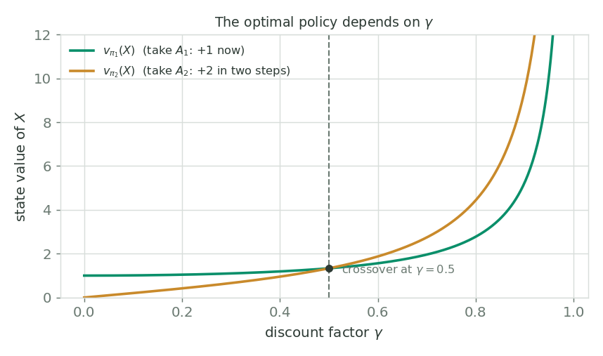

Bellman Equations & Optimality
The state-value Bellman equation
Recall two facts. The return is the discounted sum of future rewards, $G_t = \sum_{k=0}^{\infty} \gamma^{k} R_{t+k+1}$, and it satisfies the recursion $G_t = R_{t+1} + \gamma\, G_{t+1}$. Substituting that recursion into the definition of the state value is the whole trick:
Now we expand that expectation in two stages, both instances of the law of total expectation, which says $\mathbb{E}[X] = \sum_{y} \Pr\{Y = y\}\, \mathbb{E}[X \mid Y = y]$. First we condition on the action the agent chooses, summing over actions weighted by the policy $\pi(a \mid s)$. Then we condition on the next state and reward, summing over them weighted by the dynamics $p(s', r \mid s, a)$. The result is the Bellman equation for $v_\pi$:
Read it as an average over one step. Pick an action from the policy; the environment hands back a reward $r$ and a next state $s'$; the value of $s$ is the reward you get plus the discounted value of wherever you land, averaged over everything that is random. The value of a state is written in terms of the values of its possible successor states.
The Bellman equation is a linear system
Here is what makes the Bellman equation so useful: for a fixed policy it is linear in the unknown values $v_\pi(s)$. Writing one Bellman equation per state gives a system of simultaneous linear equations, one unknown per state, which can be solved directly.
A tiny example makes this tangible. Imagine a state $A$ under the uniform random policy over four moves, with $\gamma = 0.7$, where moving right goes to $B$ with reward $+5$, moving down goes to $C$, and the up and left moves bump a wall and stay in $A$ with $0$ reward. Plugging into the Bellman equation, the inner sum over $(s', r)$ collapses to a single term per action (this gridworld is deterministic), leaving
This is one equation in the unknowns $v_\pi(A), v_\pi(B), v_\pi(C)$. Write the analogous equation for every state and you get a closed linear system; solving it yields the exact value of every state. That is precisely how the $5 \times 5$ gridworld table in Part 1 was computed.
The action-value Bellman equation
The same expansion works for the action-value function. Starting from $q_\pi(s,a)$ and expanding one step gives a recursion in terms of the next state's action values, averaged under the policy:
The structure mirrors the $v_\pi$ equation, but because we have already committed to action $a$, the outer sum over the policy is gone; it reappears inside, over the next action $a'$, since after landing in $s'$ we are back to following $\pi$.
Optimal policies
Value functions let us rank policies. We say policy $\pi_1$ is at least as good as $\pi_2$, written $\pi_1 \ge \pi_2$, exactly when its state value is at least as high everywhere:
An optimal policy $\pi_*$ is one that is as good as or better than every other policy. A foundational result: for any finite MDP there always exists an optimal deterministic policy, one that selects a single best action in every state, assigning probability $1$ to the action of highest value and $0$ to all others.
Optimal value functions
All optimal policies share the same state-value function, the optimal state-value function $v_*$, defined as the best value achievable in each state over all policies:
Likewise they share the same optimal action-value function $q_*$:
The Bellman optimality equations
For a general MDP we cannot brute-force every policy to find $v_*$, so we need equations that $v_*$ and $q_*$ satisfy directly. They come from the Bellman equations with one change: an optimal policy puts all its probability on the best action, so the sum over actions $\sum_a \pi(a \mid s)$ collapses into a $\max$ over actions. That gives the Bellman optimality equation for $v_*$:
and, making the same replacement in the action-value equation, the Bellman optimality equation for $q_*$:
The difference between $v_\pi$ and $v_*$ is the difference between averaging over the policy's actions and taking the best one. Unlike the policy-specific Bellman equations these are non-linear (the $\max$ is not linear), which is why solving them needs the iterative methods of dynamic programming.
Extracting the optimal policy from $q_*$
Why is $q_*$ so prized? Because it makes acting optimally trivial. If you know $q_*(s, a)$, the optimal policy is simply to take, in each state, the action with the largest optimal action-value, with no further search or lookahead required:
That single line is the prize the whole framework is built toward. Compute $q_*$ once, then act greedily with respect to it forever.
How the discount factor shapes the optimal policy
One subtlety worth internalising: which policy is optimal can depend on $\gamma$. Consider a state $X$ with two actions. Action $A_1$ yields $+1$ after one step (and the cycle repeats every two steps); action $A_2$ yields $+2$, but only after two steps. The two policies have closed-form values

figures/gen_week3.py.At $\gamma = 0$ the agent is myopic, only the immediate reward counts, so $\pi_1$ (grab the $+1$ now) is optimal. As $\gamma$ grows past $0.5$ the larger delayed reward wins and $\pi_2$ becomes optimal. The discount factor is not just a convergence trick; it is part of the problem definition, and it can change the answer.
Next up in the course: now that we know what we want ($v_*$, $q_*$, and the Bellman optimality equations they satisfy), Week 4 turns to dynamic programming, the iterative algorithms (policy evaluation, policy iteration, value iteration) that actually compute them.